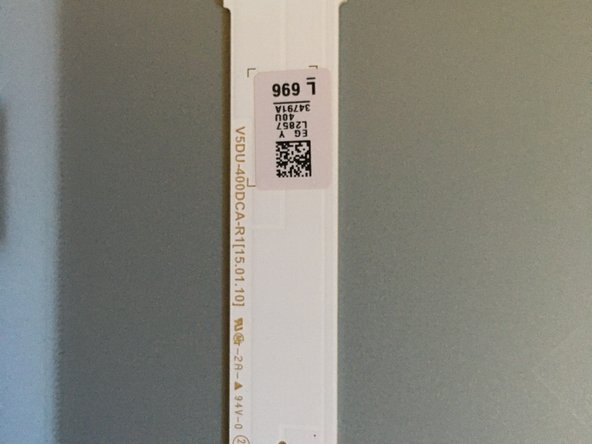
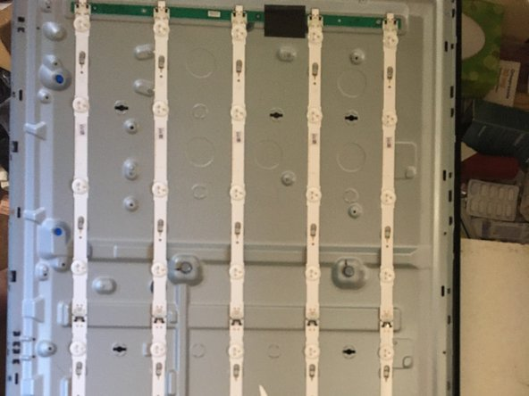

Learn LED backlight fault isolation and panel handling
Reproduce an open LED string at 5 V, identify exact TV strip revisions and rehearse the fragile display stack before real service.
For a stable backlight with a lit but distorted or blank screen, use P106's image path and panel diagnosis.
See what it takes to reach the strips
A direct-lit set has an array of lenses behind the LCD glass and optical films. An edge-lit set places its strips beside a light guide. A blown or open LED, a detached lens and a deteriorated reflector can give different symptoms. Work the closed-case checks in P99 before handing a TV to an internal repair bench. Use this lesson's small trainer and an already separated, unpowered panel stack to practise.

Photo by Greg Sully and iFixit contributors, scaled with on-page callouts. Original repair photograph · CC BY-NC-SA 3.0.

Photo by Greg Sully and iFixit contributors, scaled with on-page callouts. Original repair photograph · CC BY-NC-SA 3.0.

Photo by Greg Sully and iFixit contributors, scaled with on-page callouts. Original repair photograph · CC BY-NC-SA 3.0.
Watch. See how the glass is supported, the optical films are lifted as a set, and the strips are indexed by position. The video uses certain LG 42-inch models. The photographs show a Samsung model to illustrate why a different series can need different parts and disassembly. Use the clip to study mechanical handling. ShopJimmy's LG 42-inch strip replacement.
Model an open LED string at 5 V
Use an isolated 5 V source capped at 30 mA, four low-current red LEDs whose typical forward voltage is about 2 V at a few milliamps, two 330 Ω resistors rated at 0.25 W, breadboard leads and a multimeter. This is a teaching model with ordinary LEDs and series resistors. See T51 for how a TV driver regulates current.
With power off, make two branches. Each starts at 5 V, goes through its own 330 Ω resistor and two forward-oriented red LEDs in series, and ends at return. Add a removable lead in one branch between its two LEDs. Verify orientation before switching on.
With both leads fitted, record each resistor's voltage in DC volts and divide it by 330 Ω for branch current. At an assumed 2 V per illuminated LED, the nominal drop across each resistor is 1 V, or roughly 3 mA. Record your actual readings. Hold a sheet of tracing paper a short distance in front of the LEDs to compare the bright points and diffused pattern.
Turn off the source and remove the link in one branch. Restore power. Both LEDs in that branch go dark, its resistor drop falls near zero, and the other branch keeps conducting. Turn power off, restore the link and retest. A TV driver may instead shut down a larger bank or the entire backlight if it detects an open string.
Explain why a single open can darken two good-looking lamps on your trainer. A dim or dark region alone does not reveal whether the strip, lens, conductor or driver needs attention. A whole TV strip can require much more voltage than the little circuit here. Keep the trainer away from TV connectors and do not attach a generic LED tester to an assembled television.
Rehearse the optical stack before a real job
On an already separated donor stack supplied by the technician, keep the LCD glass fully supported and the attached flexes free of load. Practise with a scrap panel small enough to handle or with a partner for larger assemblies. Prepare a clean, rigid, flat work surface and a separate protected landing area for the panel.
Photograph the front and orientation of each optical layer. Keep the film order, face and corner reference. Mark handling tabs or the holder where suitable and avoid marking the optical face. Observe reflector location, lens register, spacers and retention clips on the exact model. A crease, fingerprint or reversed sheet may show in the picture after assembly.
Record the panel part number, the strip codes on every variant used, connector orientation, lens spacing and attachment points. Compare the exact approved or verified strip set. New and worn LEDs can show different brightness and colour. On an ageing set compare a matched set with the cost and risk of reopening the panel later.
For a real mains-powered TV, review the service isolation, stored-energy and insulation procedures with a qualified technician before the cover is touched. The videos and photos show repair construction. This lab's work uses the isolated trainer and already separated mechanics. A completed real repair needs a closed-cabinet picture test and the applicable electrical safety checks. HSE TV servicing guidance.
Check the finished picture
Use a built-in or known-good source for white, grey and black fields, and then normal video. Check for flicker, bright spots, dark zones or colour differences at normal brightness and after warm-up. Check the original input and audio after the other cables have been refitted. Record any remaining panel defects separately.